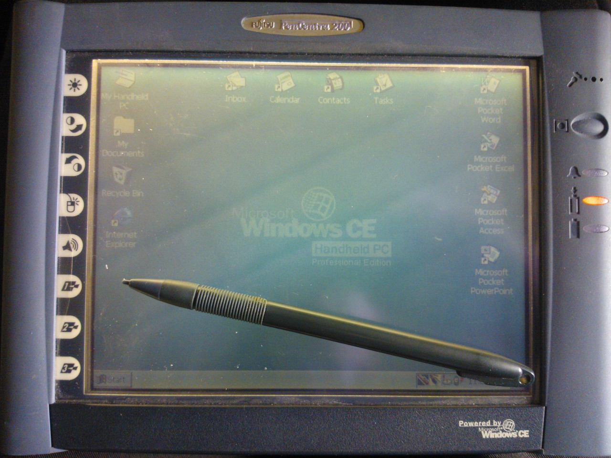
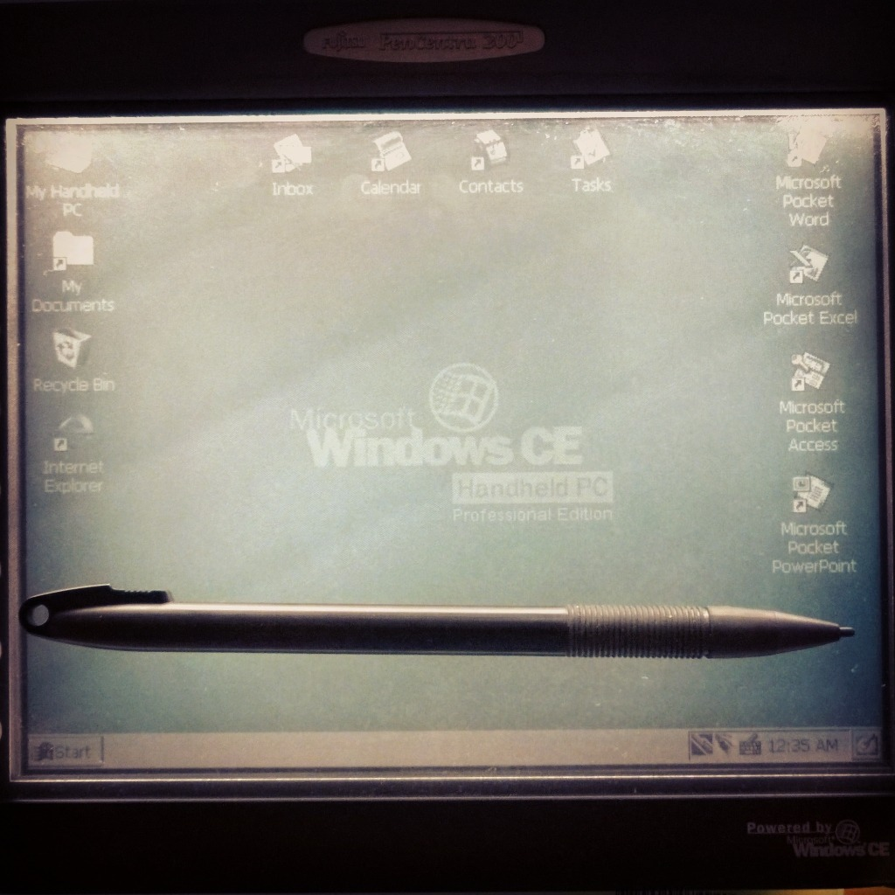

After talking about my new CE 1.0 Handheld PC, I thought I ought to show you all what my tablet looks like. It’s about 14-15 years old now and I’ve had it for almost eleven months. I don’t use it much, but that’s not the point. The reason I got it was for the novelty value - these things are rare as rocking horse droppings, and I’d never seen one before. But since it ran this mythical Windows CE OS, I decided I had to have it. One auction and fifty dollars later, it was mine.
So here it is, my Fujitsu PenCentra 200, circa 1999-2000.
While using the stylus can be a bit of a mission (you have to hold it just so, otherwise the letters you write are incomplete and your Solitaire games a total nightmare), it’s otherwise cool to have. It’s definitely a stripped-down version of something resembling both Windows 98 and Windows 2000, but the built-in Office and Internet features make up for it, and it’s actually surprising how similar it is to an actual desktop system.
Naturally after so much time it’s woefully outdated: battery life is anywhere around 30-45 minutes, its modem is dial-up, it takes a PS/2 mouse or keyboard connection, and it hooks up to a computer with a serial port - its USB port is, as far as any of my devices are concerned, purely decorative. But it doesn’t worry me. Like I said, it’s not a serious portable computing tool - my laptop and smartphone take care of that. It’s more a physical reminder of where we’ve come, and it’s also a great conversation piece when talking technology with my friends. In the age of Surfaces and iPads (the former of which I would love to have, since putting Windows 98 onto it would be epic fun), it’s hilarious to see the looks on people’s faces when I pull out this enormous 1½"-thick tablet that predates this millennium.
But what surprises me the most is that I can get this tablet to work with my Windows 7 desktop. Okay, sure, in order to move stuff between them I need a Windows 2000 virtual machine in the middle and $50 worth of USB-serial converter cables, but it’s proof that it can be done. Sadly, it will never browse the Internet again, which is a shame because it would make for a very interesting Facebook, YouTube, and Tumblr experience.